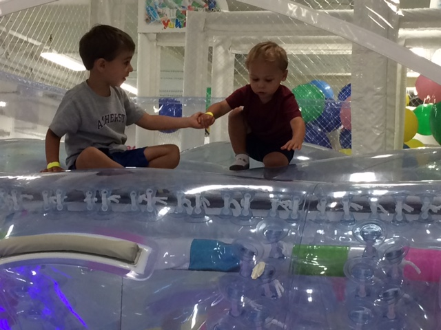
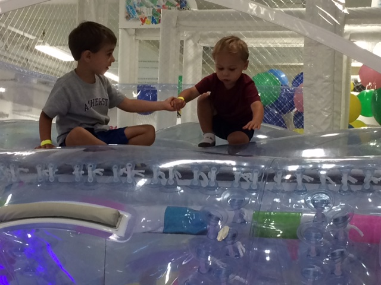

Last updated: January 2, 2018
Lane Paul Sowers
September 12, 2012
12:37 p.m.
7 pounds and 1 ounce
19 inches long
Lane Paul Sowers
September 12, 2012
12:37 p.m.
7 pounds and 1 ounce
19 inches long
2012 - 2013
The day Lane was born, our lives changed forever (for the better, of course!). Lane was a happy baby, but we all had to get used to spit up, dirty diapers, and less sleep. Early on, the monkey mat was a frequent play space for Lane, and he took regular trips shopping with Mommy. As he got a bit older, Gymboree was one of Lane’s favorite outings even if it was just to hear music or crawl around. Around nine months, Lane began to cruise around the house and just before ten months old, Lane began to walk. We have been chasing him since.
2013 - 2014
Lane began to sleep much better, which his Mommy and Daddy truly appreciated. Lane also continued to go to Brown House, Holton-Arms School’s child development center, with Daddy every day. At Brown House, Lane would play, nap, sing, and color. His teachers loved him to pieces. Lane’s temperament evened out and he took plenty of rides in the blue buggy afternoons and evenings. Lane also really enjoyed when someone would read to him. His favorite bedtime stories were Go Dog Go! and Mr. Brown can Moo, Can You?
2014 - 2015
Truth be told, when Lane turned three, it took him a few months to get out of the "terrible-twos." This said, it wasn't too long before he blossomed into the sweet, caring big helper we always he him to be. Exhibit A would be the role he played as ringer bearer in Uncle Eric and Aunt Rachel’s wedding. It was cold, but he brought the ring down like a champ and then sat quietly and attentively through the entire service.
Lane’s love for books and reading continued to grow as did his library. Other favorite activities included drawing and going on “nice walks” with Mommy and Daddy. In addition to being on his first soccer team, this would also be Lane’s first summer at Sidwell Summer Camp.
2015 - 2016
After spending one year in Ms. Wilson’s class as a two-year-old and one year in Ms. Shannon’s class as a three-year-old, Lane entered Ms. Jackie’s class as a “second-year.” He quickly made friends with many children aged three, four, and five years old. Among his new friends, Posey Elizabeth Carpenter held a special place in Lane’s heart as an especially good friend.
Lane’s love for reading began to morph into a keen desire to read on his own. Starting with his “Bob Books,” Lane learned how to decipher three letter words, such as, pat, sat, net, and wet. Sight words were also quickly committed to memory. Lane played a year of team baseball; while it was a challenge at times, he learned to throw, catch, and bat. Lane truly started to come into his own and he matured both mentally and physically. This is also the year in which Lane learned how to take pcitures with Daddy's phone.
2016 - 2017
 

Lane has grown like a weed and he only turned five roughly three months ago. Dance and art club are his two after school activities. When he is not there he is with Tania at the library, on the playground, or at home playing with his toys. While there will always be some feuding between brothers, for the most part Lane is a really good big brother. They play together nicely and sing some pretty interesting songs together.
Lane’s closest friends at Montessori include Sydney, Paz, Gus, and Shreya, yet he still keeps in touch with some friends who graduated, such as Mattis. If you have a chance, ask Lane to sing Bad Blood or Shake It Off for you…he’d love to show you his stuff.
Lane's Photo Gallery
Lane enjoys taking his Mommy and Daddy's phone, and then snapping pcitures. Below are a few of his favorites!
Books.
A monkey always seems to make an appearance.
Kiki, the tiger shown, is Teddy's favorite "baby." This is an example of Lane staging Kiki.
Lane enjoys taking picturs of his brother. Lane apparently caught him with a mouthful.
Can you see Lane's reflection in the tea kettle?
An early morning.